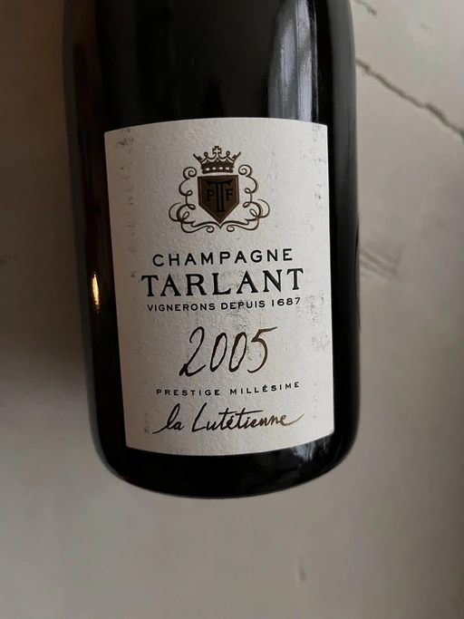

- Type
- White Sparkling, Brut nature
- Producer
- Tarlant
- Vintage
- 2005
- Disgorged in
- February 14th, 2020
- Spent on lees
- 165 months
- Location
- France, Champagne AOC
- Grapes
- Chardonnay, Pinot Noir
- Alcohol
- 12
- Sugar
- NA
- Price
- 1800 UAH
- Cellar
- 1 bottle
An 80/20 blend of Chardonnay and Pinot Noir, grown organically on Lutetian limestone. The name “la Lutétienne” translates to “the one from Lutèce (Lutetia)”, the ancient Roman city that is now Paris. The 2005 vintage comes from five lieu-dits: Mocque Tonneau, Four à Chaux, Le Métier in Celles-lès-Condé along with Les Forgeottes and L’Enclume in Oeuilly.
The fruits are gently pressed and fermented with native yeasts in Burgundian barrels without going through malolactic fermentation. The wine is aged on the lees for six months in barrels before being blended and bottled with no dosage on May 4th, 2006. It is aged sur lattes for 13 years and nine months before being disgorged on February 14th, 2020.
Ratings
There are no ratings of this wine yet. It’s waiting for the right moment, which could be today, tomorrow or even in a year. Or maybe, I am drinking it at this moment… So stay tuned!